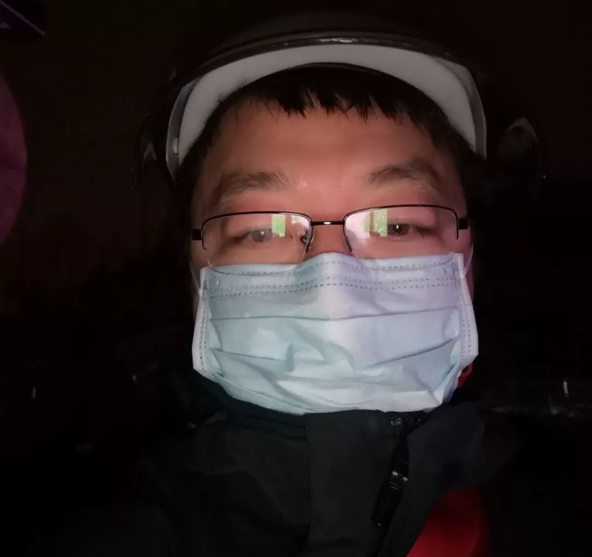
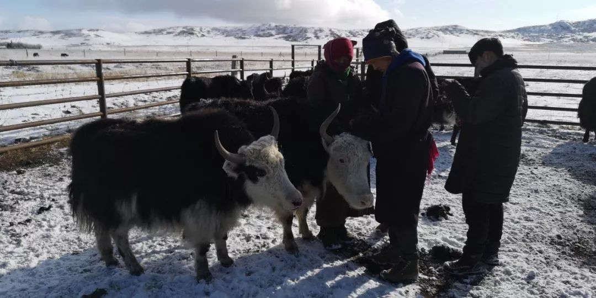
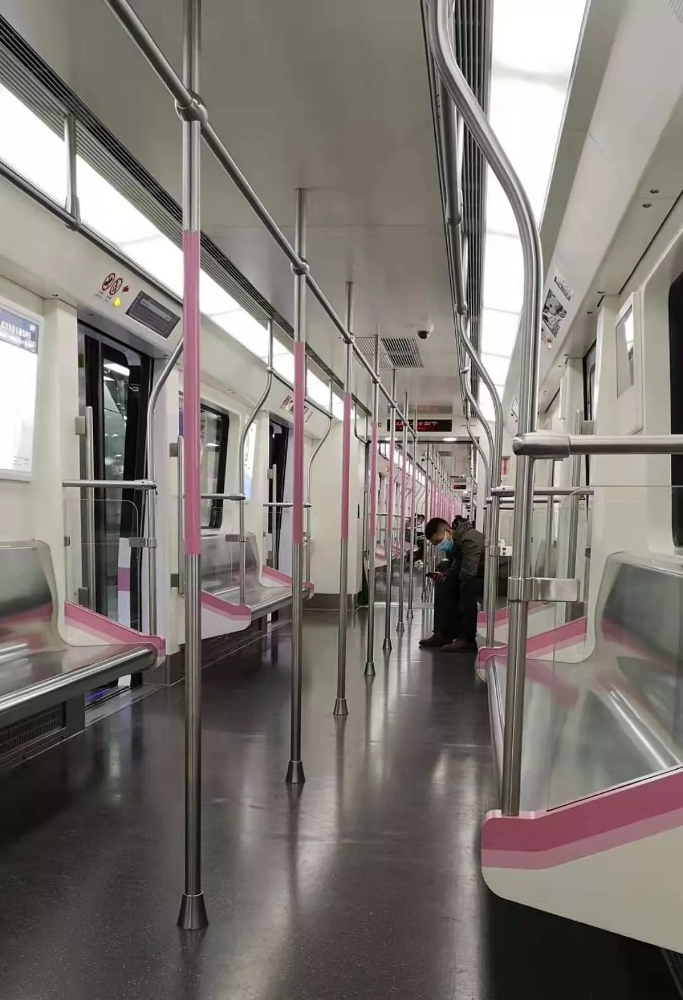
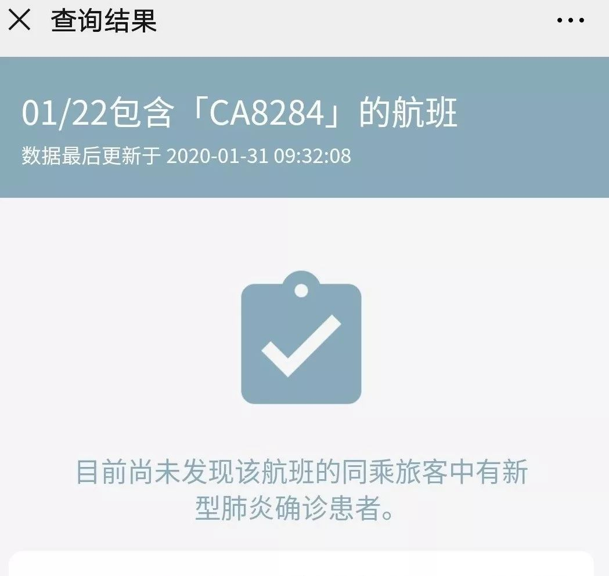
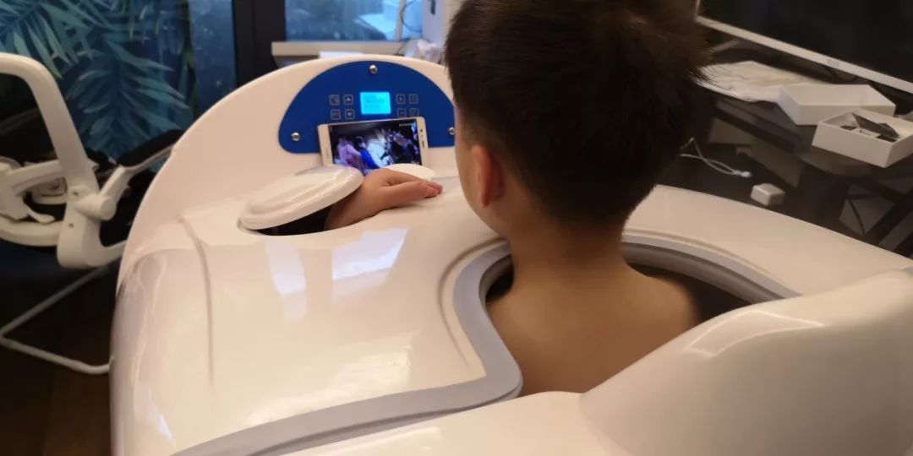

肺炎日记|2月1日：全国病例破万 社会力量参与抗疫呼声不止
原文链接 备份链接 【财新网】（记者 丁捷 综合）2020年2月第1天， 新型冠状病毒确诊患者数量已突破万人。仅次于武汉的重疫区——湖北黄冈下达“史上最严出行令”，2月1日起，严格控制市区居民出行。每户家庭每两天可指派1人上街采购生活物 …

老母亲问我为啥这么拼命，又没人给开工资。我回说，这次真的拼了命了，只因为我是您的孩子，也是一个父亲。这不，我看到日本朋友捐助武汉的物资上，日本汉语水平考试事务所物资上的字——“山川异域，风月同天”。作为武汉人，难道我不该更为家乡做些什么吗？
口述、图 | 白慧冬
整理 | 姜浩峰
过年前，因为工作上的事，我从武汉开车，先到重庆，再到四川省阿坝藏族羌族自治州，在返回武汉的半路，车遇到了问题，只得飞回武汉。然后，武汉封城了。
在春节期间，我先后接到了阿坝州和重庆公安的电话。我向他们如实说明了自己去过的地方，以及自己身体的情况。目前来看，从阿坝州回武汉已有半个月了，我的身体很健康。相信没有携带新型冠状病毒，也就没有将病毒传染给任何人。
接下来的一段日子，作为青宁信安科技的联合创始人，我肯定不能出武汉，去深圳的总部工作，或者再出差。但我相信疫情一定能控制住，一切都会好起来。在武汉，我宅在家里，除了为支援武汉的志愿者们提供力所能及的帮助，每天还写“坚守日记”。

我现在武汉的日常
我做的有角动物放牧机器人项目，本身与牧区防疫有关。应阿坝州红原县畜牧局的邀请，我1月15日从武汉动身。之所以开车去重庆，是因为此前我们在西藏当雄县安装的放牧机器人，多出来20套，正好用在阿坝。

在红原县牧区
我开车到重庆，是1月16日。中午还和重庆的朋友一起吃了火锅，并顺便谈了下项目合作的事。当时，武汉新型冠状病毒引起的肺炎的情况，我们武汉老百姓如果没得这个肺炎，也是无感的。不知道疫情发展会这么严重。更别提重庆的朋友了。
吃完火锅，我就开车去了机场，接了设备就奔赴红原县。在安装完动物放牧机器人以后，我开车回武汉，哪知道在一个叫三家寨的地方撞车了。4S店告诉我，春节前修不好。我只得去成都，飞回武汉。到成都时，已经是1月22日凌晨了。
我的车困在了三家寨
那时候，我听说很多人都在出逃，逃离武汉。我却一定要回家。我对朋友说，我不能走，我儿子还在武汉，我70岁的老母亲还在武汉，我不能带他们在封城前到火车站经历更大的风险。医学常识告诉我，这不科学！我当时想，只有返家，只要我在家，他们才能好好活下去。

1月22日的武汉机场，出入口都加了红外测温设备
回到武汉以后，我发现情况和出武汉时迥异了。譬如机场出入口都加了红外测温设备。在出口处，我看到一位没有戴口罩的出租车师傅，心里第一感觉就是绕开他走。我从成排的其他人后面绕过去。他还追问我要不要车。我心里都在骂娘了：“要车也不敢要你这样的车！”他一看我推着行李开始狂奔，就自己意识到了，然后就不再追我了。
上地铁后，发现平时下班时间段人满为患的地铁，基本上是空的。火车站那一站上来的人也特别少。

1月22日下午本是下班高峰时的武汉地铁
真的封城了。对于我来说，封城并不是特别严重的问题——我的公司在深圳，但我平时也不常去，大多数时间我在武汉。原本准备春节后去北京，会一会中国农业大学的刘继军教授。他是畜牧工程方面的专家，我想听听他对我们产品的意见，以及在畜牧业动物当代保护领域的发展前景。另一方面，也会一会我清华的师兄。但目前来看，这些事暂时只能搁置。
回到家后，我也盯着我1月22日所乘航班的信息，最终确认，那个航班没有感染者。幸甚！

我乘坐的航班没有感染者
1月27日，农历大年初三20时55分，我接到了来自阿坝州马尔康市的电话。对方自称是公安局的，通过移动公司了解到我这个手机号码此前到过阿坝州。想了解一下我的情况。我当时心想，公安同志确实是够敬业的，大晚上的还在打电话，逐一排查。我回答了他们的问话，包括我的名字、身体状况、去过哪些地方等等。我还和对方说，自己从阿坝回到武汉已经十天了，从我自己了解到的此次新型冠状病毒疫情来看，我本人应该没有问题。同时我确定如果有症状，可以第一时间和他们联系。
两天后，也就是1月29日大年初五，早上9点多钟，我又接到了重庆公安的电话。他们的问话和阿坝州公安差不多。我告诉重庆公安，我到达重庆至当时，已经十多天了，没有症状。

我家的循环运动舱
在武汉过年，自我隔离，苦中作乐。因为我平时经常出差，许多时候靠妈妈帮我带孩子，所以我本身就储备了许多冷冻菜，在阿坝我还带回了84斤牦牛肉。所以春节期间我们宅在家里，自我隔离，是做得到的。另一方面，我家在江夏区，离武汉老城市中心比较远，超市少，且缺货，也不必去凑热闹。
年初五，武汉放晴。我印象中，武汉持续了一个多月阴雨天，一下放晴，封城状态中的老百姓，心情也舒畅些。有人熬不住，出去“放风”，果然媒体报道称，市区有一家三口出门散步回家后就中招的。这么说，我家自我隔离还是对的。

在武东高速等待物资
不过我也不是没出过门。我在武汉家里自我隔离，也不能无所事事。其实即使春节期间，我也挺忙的。我在帮一些朋友做物资统计。他们运到武汉来的援助物资，我会清点。我家房子比较大，楼下有四个仓库，可以用来放物资。物资存放在这里，有用可以来取。
1月28日大年初四，有公司支援送来手套。我得去接车。因为我的车放在成都维修，所以只能开着电瓶车去接车。凌晨三点整接到电话，匆匆出了门。出门开了一段路，我才想起来——自己忘了戴口罩。当时想，还真不能返回家里重新戴口罩，因为电瓶车标准里程只有40公里，如果回家取口罩，从我家到接车点，是15公里。低温会造成电瓶车电池容量下降。如果耽误了时间，我很可能骑车出去，就只能推车回家！

在等待接收物资的时候，看到武汉一些医院在此等候的车辆
但又回头一想，自己应该是安全的——当时是凌晨，室外一个人都没有。从我个人了解的病毒学的一些常识来看，这种情况下，如果空气中真有一两个新型冠状病毒，应该不至于攻破我的人体防线——它没到一定的基数、数量级，我的人体防御系统完全能抵挡得住。更何况马路上一个人都没有，新型冠状病毒不可能在这种情况下在外界长时间存活。到了接车点——武东高速出口，是凌晨3点38分。那一车有10万多手套。我帮助领2000副手套，用于前来武汉支援的一部分工作人员之用。感谢这些热心人对武汉的支持！

我在武汉接到的援助物资
到家时，已经是早上6点了。幸好，我的电瓶车电池扛住了。到家后，我立刻用84消毒液喷了全身，然后进入家里的循环运动舱进行了20分钟47度的蒸疗，快7点才睡下。老母亲问我为啥这么拼命，又没人给开工资。我回说，这次真的拼了命了，只因为我是您的孩子，也是一个父亲。这不，我看到日本朋友捐助武汉的物资上，日本汉语水平考试事务所物资上的字——“山川异域，风月同天”。作为武汉人，难道我不该更为家乡做些什么吗？

日本汉语水平考试事务所支援湖北高校物资
征集令
《新民周刊》现面向全国征集新冠肺炎采访对象和真实故事：
如果你是参与抗击新冠肺炎疫情的医护人员或其家属，我们希望聆听你的“战疫”故事，也希望传达你的诉求。
如果你是确诊、疑似患者本人或家属，我们希望了解你和家人如何“抗疫”的过程，让外界了解你的真实经历。
如果你是疫情严重地区的普通市民，我们希望展现你的乐观，并倾听你所需的帮助。
如果你是公共服务人员或各类捐助者，我们希望看到你的“最美逆行”，记录下你的无私。
……
抗击新冠肺炎疫情，我们诚征对疫情了解的社会各界人士，提供相关线索，说出你的故事，让我们用新闻留存这一切。
《新民周刊》新冠肺炎线索征集值班编辑联系方式（添加时请简要自我介绍）：
周一：应 琛 微信号：paulineying0127
周二：金 姬 微信号：gepetta
周三：黄 祺 微信号：wxid_bf5mudid7oz322
周四：周 洁 微信号：asyouasyou
周五：孔冰欣 微信号：kbx875055141
周六：吴 雪 微信号：shyshine1105
周日：姜浩峰 微信号：jianggeladandong
新闻是历史的底稿，你们是历史的见证者。期待你的故事、你的线索！

▼
大家还都在看这些
▼
转载请在评论区留言，获得授权！
转载时，须注明作者、出处和微信号


原文链接 备份链接 【财新网】（记者 丁捷 综合）2020年2月第1天， 新型冠状病毒确诊患者数量已突破万人。仅次于武汉的重疫区——湖北黄冈下达“史上最严出行令”，2月1日起，严格控制市区居民出行。每户家庭每两天可指派1人上街采购生活物 …
原文链接 备份链接 我住在汉口，是这次疫情的重灾区。那个被查出疫情源头的华南海鲜市场，就在火车站对面，离我家大概20公里。我希望疫情早日结束，对我们国家的经济影响小一些，所有人都能够平安和健康。 口述 | 小 玲 整理 | 沈 林 我叫小 …
原文链接 备份链接 17 年前的那场公共卫生危机，未能及时公开疫情成为事后被诟病最多的问题之一，也成为中国疾病防控系统以及政府信息公开等许多方面的重要转折点。 而多年后，越来越多的互联网官方渠道成为了重大事件的定海神针，「官宣」被普遍接 …
原文链接 备份链接 27.01.2020本文字数：2907，阅读时长大约5分钟 导读：此次肺炎病毒毒性没有非典强但是传播力特别强，所以要想尽早恢复平安就要听从政府安排。 作者 | 第一财经 林春挺 李溯婉 每年春节前后，有许多外省车主自 …
原文链接 备份链接 【财新网】（记者 张帆）1月24日中午12点左右，作为疫情爆发中心地的湖北省姗姗启动重大突发公共卫生事件一级响应。而在此之前，从1月23日起，已有浙江、广东、湖南、北京、上海、天津、安徽、重庆、四川等多个省份启动一级 …